library(lubridate)
library(dplyr)
library(DataExplorer)
library(ggplot2)
library(nortest)relatorio_01
Trabalho de Estatística - Análise Exploratória de Dados (AED)
Contexto
Uma loja de varejo localizada nos Estados Unidos (EUA), decidiu realizar um estudo estatístico sobre as suas vendas no período de 2015 a 2018, com o objetivo de utilizar esse estudo como apoio na tomada de decisões executivas/comerciáis para o ano de 2019. Com isso, ela elencou alguns dados especificos que gostaria de ter no referido estudo, bem como algumas hipóteses que ela gostaria que fosse verificada e documentada.
Os dados específicos elencados pela loja foram:
- Qual é o total de vendas por dia, mês e ano
- Qual é a média e o desvio padrão das vendas por dia, mês e ano
- Qual é o tipo de envio mais utilizado nas vendas por mês e ano
- Qual as dez cidades e estados que podduem o maior valor de vendas e qual foi a categoria de produto mais vendida
As hipóteses levantadas pela loja foram:
- A proporção das vendas que obtiveram valor maior ou igual ao valor médio é de pelo menos \(50\%\)
- O valor das vendas mensais no ano de 2017 é considerada proviniente de uma distribuição Normal
Levantamentos do estudo estatístico
População
Qual: Todas as vendas da super loja nos anos de 2015 a 2018
Tipo: Finita
Variáveis
- Data da venda (Dia, Mês, Ano)
- Tipo: Qualitativa Ordinal
- Tipo de envio
- Tipo: Qualitativa Nominal
- Estado da venda
- Tipo: Qualitativa Nominal
- Cidade da venda
- Tipo: Qualitativa Nominal
- Categoria do produto
- Tipo: Quantitativa Nominal
- Valor da venda
- Tipo: Quantitativa Contínua
Objetivos
- Geral: Tem-se como objetivo geral a utilização do estudo estatístico para a tomada de decisões executivas/comerciáis para o ano de 2019 da loja.
- Específicos: Tem-se como objetivos específicos o levantamento de dados elencados pela loja e a verificação e documentação de hipóteses tembém levantados pela loja.
Foi necessário a coleta de uma amostra?
Não. O presente estudo foi realizado com a população por completa, ou seja, utilizou-se de um censo no lugar de uma amostra. Dessa forma, toda e qualquer informação/dado gerado pelo presente estudo extraído da população é um parâmetro.
Analise Exploratória de Dados (AED)
Instalando bibliotecas/pacotes necessários
Paleta de cores
Backgroundv="#282a36"
Current_Line="#44475a"
Foreground="#f8f8f2"
Comment="#6272a4"
Cyan="#8be9fd"
Green="#50fa7b"
Orange="#ffb86c"
Pink="#ff79c6"
Purple="#bd93f9"
Red="#ff5555"
Yellow="#f1fa8c"Carregando base de dados
dados = read.csv("datasets/data.csv")Visualizando informações sobre a base de dados
Número de linhas e colunas
dim(dados)[1] 9800 18Como pode ser visualizado acima temos uma população de tamanho 9800 e 18 varíaveis
Nome das colunas
names(dados) [1] "Row.ID" "Order.ID" "Order.Date" "Ship.Date"
[5] "Ship.Mode" "Customer.ID" "Customer.Name" "Segment"
[9] "Country" "City" "State" "Postal.Code"
[13] "Region" "Product.ID" "Category" "Sub.Category"
[17] "Product.Name" "Sales" Dessas colunas(variáveis) vamos utilizar somente
- Order.Date (Data da venda)
- Ship.Mode (Tipo de envio)
- State (Estado da venda)
- City (Cidade da venda)
- Category (Categoria do produto)
- Sales (Valor da venda)
Manipulando base de dados para o estudo
Selecionandos as variáveis de interesse
dados = dados %>% select(Order.Date, Ship.Mode, State, City, Category, Sales)
knitr::kable(head(dados), caption="Primeiras linhas da base de dados")| Order.Date | Ship.Mode | State | City | Category | Sales |
|---|---|---|---|---|---|
| 08/11/2017 | Second Class | Kentucky | Henderson | Furniture | 261.9600 |
| 08/11/2017 | Second Class | Kentucky | Henderson | Furniture | 731.9400 |
| 12/06/2017 | Second Class | California | Los Angeles | Office Supplies | 14.6200 |
| 11/10/2016 | Standard Class | Florida | Fort Lauderdale | Furniture | 957.5775 |
| 11/10/2016 | Standard Class | Florida | Fort Lauderdale | Office Supplies | 22.3680 |
| 09/06/2015 | Standard Class | California | Los Angeles | Furniture | 48.8600 |
Buscando por valores ausentes (NAs, zeros, etc) com o pacote “DataExplorer”
Detalhes
- O parâmetro group da função categoriza a variável de acordo com os limites superiores estipulados
plot_missing(dados,
title="Porcentagem de valores ausentes nas variáveis",
group = list(Bom = 0.05, Ok = 0.4, Ruim = 0.8, Remover = 1))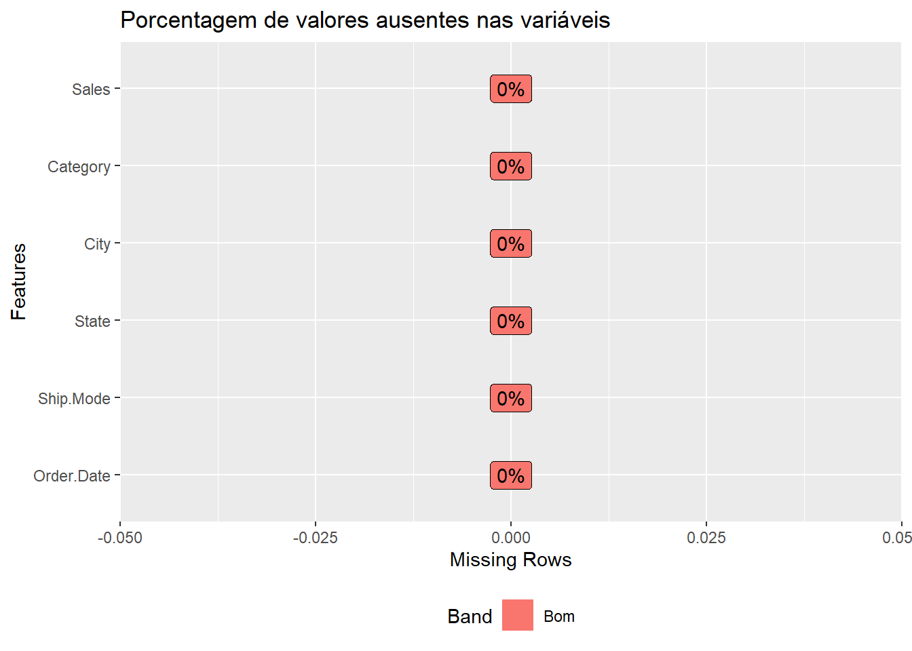
Como pode ser visualizado acima não existe valores ausentes na base de dados para as variáveis utilizadas.
Transformação dos dados
Para melhorar o processamento e facilitar nas operações estátisticas, devemos separar a coluna Order.Data em três novas colunas Day, Month e Year
dados = dados %>% mutate(
Day = day(dmy(Order.Date)),
Month = month(dmy(Order.Date), label = TRUE),
Year = year(dmy(Order.Date)),
Order.Date = NULL
)
knitr::kable(head(dados), caption="Primeiras linhas da base de dados")| Ship.Mode | State | City | Category | Sales | Day | Month | Year |
|---|---|---|---|---|---|---|---|
| Second Class | Kentucky | Henderson | Furniture | 261.9600 | 8 | nov | 2017 |
| Second Class | Kentucky | Henderson | Furniture | 731.9400 | 8 | nov | 2017 |
| Second Class | California | Los Angeles | Office Supplies | 14.6200 | 12 | jun | 2017 |
| Standard Class | Florida | Fort Lauderdale | Furniture | 957.5775 | 11 | out | 2016 |
| Standard Class | Florida | Fort Lauderdale | Office Supplies | 22.3680 | 11 | out | 2016 |
| Standard Class | California | Los Angeles | Furniture | 48.8600 | 9 | jun | 2015 |
Calculando o total de vendas por dia, mês e ano
Por dia
soma_dia = dados %>% group_by(Day) %>% summarise(Sum = sum(Sales))Tabela
knitr::kable(soma_dia, caption="Soma das vendas por dia")| Day | Sum |
|---|---|
| 1 | 90957.98 |
| 2 | 103951.16 |
| 3 | 71788.69 |
| 4 | 65094.95 |
| 5 | 64277.08 |
| 6 | 51099.14 |
| 7 | 62393.95 |
| 8 | 100560.35 |
| 9 | 66582.37 |
| 10 | 62563.78 |
| 11 | 68274.31 |
| 12 | 64819.37 |
| 13 | 77964.33 |
| 14 | 70330.92 |
| 15 | 57091.81 |
| 16 | 72464.27 |
| 17 | 111719.93 |
| 18 | 90587.30 |
| 19 | 77253.76 |
| 20 | 69898.69 |
| 21 | 94842.87 |
| 22 | 66279.49 |
| 23 | 88779.63 |
| 24 | 77146.85 |
| 25 | 80400.94 |
| 26 | 73507.62 |
| 27 | 58700.33 |
| 28 | 63308.70 |
| 29 | 44334.43 |
| 30 | 64858.27 |
| 31 | 49703.52 |
Gráfico
ggplot(soma_dia, aes(x=Day, y=Sum, label=Day)) +
geom_bar(stat = "identity", width = 0.4, fill = Comment) +
geom_label()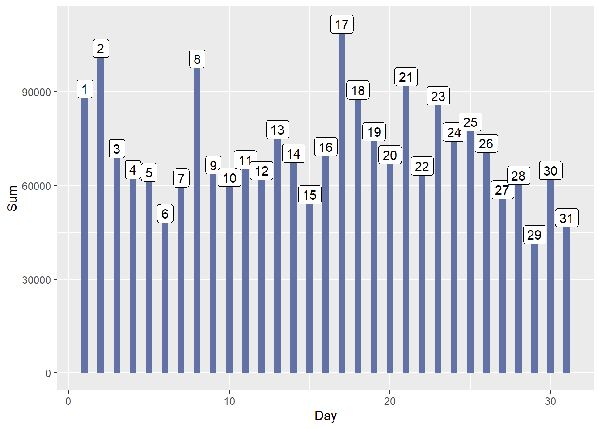
Por mês
soma_mes = dados %>% group_by(Month) %>% summarise(Sum = sum(Sales))Tabela
knitr::kable(soma_mes, caption="Soma das vendas por mês")| Month | Sum |
|---|---|
| jan | 94291.63 |
| fev | 59371.12 |
| mar | 197573.59 |
| abr | 136283.00 |
| mai | 154086.72 |
| jun | 145837.52 |
| jul | 145535.69 |
| ago | 157315.93 |
| set | 300103.41 |
| out | 199496.29 |
| nov | 350161.71 |
| dez | 321480.17 |
Gráfico
ggplot(soma_mes, aes(x=Month, y=Sum, label=round(Sum))) +
geom_bar(stat = "identity", width = 0.8, fill = Comment) +
geom_label()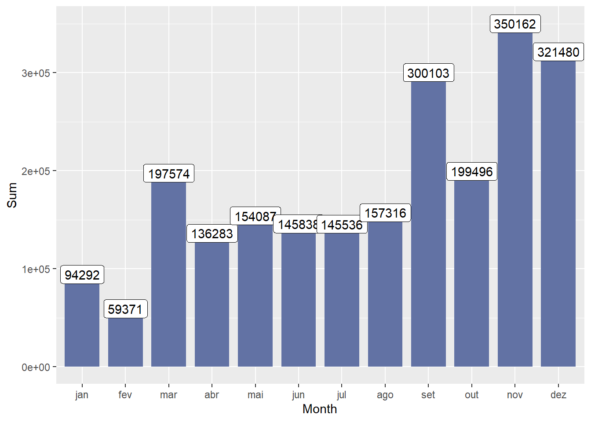
Por ano
soma_ano = dados %>% group_by(Year) %>% summarise(Sum = sum(Sales))Tabela
knitr::kable(soma_ano, caption="Soma das vendas por ano")| Year | Sum |
|---|---|
| 2015 | 479856.2 |
| 2016 | 459436.0 |
| 2017 | 600192.6 |
| 2018 | 722052.0 |
Gráfico
ggplot(soma_ano, aes(x=Year, y=Sum, label=round(Sum))) +
geom_bar(stat = "identity", fill = Comment) +
geom_label()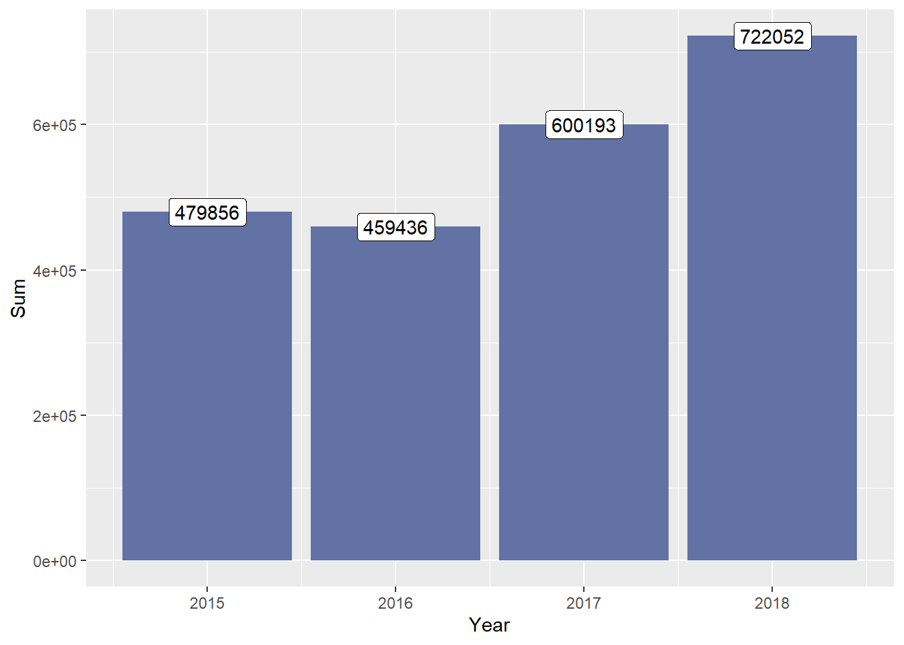
Calculando a média e o desvio padrão das vendas por dia, mês e ano
Média por dia
media_dia = dados %>% group_by(Day) %>% summarise(Mean = mean(Sales))Tabela
knitr::kable(media_dia, caption="Média das vendas por dia")| Day | Mean |
|---|---|
| 1 | 276.4680 |
| 2 | 280.9491 |
| 3 | 201.0888 |
| 4 | 213.4261 |
| 5 | 177.5610 |
| 6 | 189.2561 |
| 7 | 212.2243 |
| 8 | 288.9665 |
| 9 | 193.5534 |
| 10 | 212.0806 |
| 11 | 194.5137 |
| 12 | 194.0700 |
| 13 | 236.9736 |
| 14 | 209.9430 |
| 15 | 216.2568 |
| 16 | 273.4501 |
| 17 | 321.9595 |
| 18 | 279.5904 |
| 19 | 235.5298 |
| 20 | 179.2274 |
| 21 | 244.4404 |
| 22 | 235.8701 |
| 23 | 248.6824 |
| 24 | 258.8821 |
| 25 | 249.6924 |
| 26 | 205.9037 |
| 27 | 219.0311 |
| 28 | 226.1025 |
| 29 | 192.7584 |
| 30 | 219.8585 |
| 31 | 271.6040 |
Gráfico
ggplot(media_dia, aes(x=Day, y=Mean, label=Day)) +
geom_bar(stat = "identity", width = 0.4, fill = Red) +
geom_label()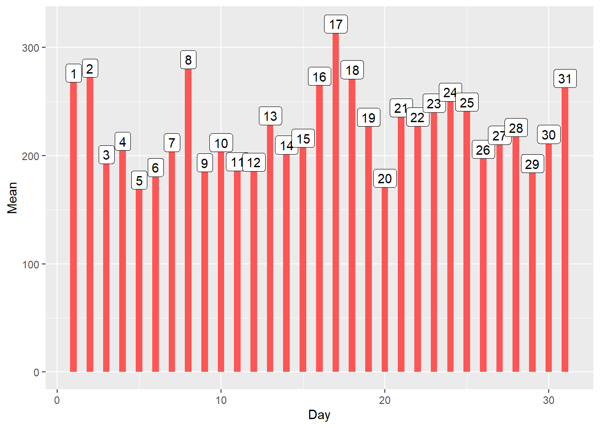
Média por Mês
media_mes = dados %>% group_by(Month) %>% summarise(Mean = mean(Sales))Tabela
knitr::kable(media_mes, caption="Média das vendas por mês")| Month | Mean |
|---|---|
| jan | 257.6274 |
| fev | 199.9027 |
| mar | 290.5494 |
| abr | 207.4323 |
| mai | 212.5334 |
| jun | 211.0529 |
| jul | 208.8030 |
| ago | 227.0071 |
| set | 221.6421 |
| out | 246.5962 |
| nov | 241.6575 |
| dez | 232.6195 |
Gráfico
ggplot(media_mes, aes(x=Month, y=Mean, label=round(Mean))) +
geom_bar(stat = 'identity', fill = Red) +
geom_label() 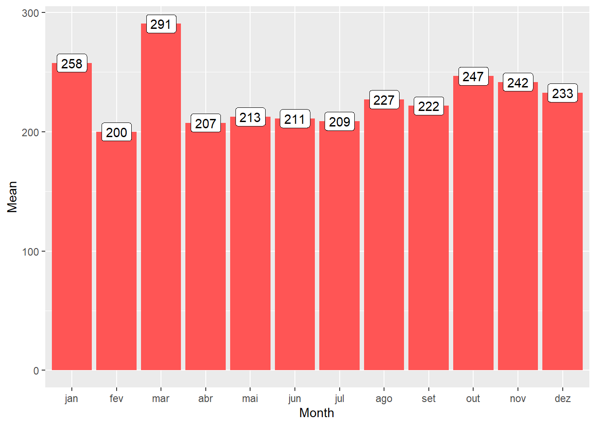
Média por Ano
media_ano = dados %>% group_by(Year) %>% summarise(Mean = mean(Sales))Tabela
knitr::kable(head(media_ano), caption="Média das vendas por ano")| Year | Mean |
|---|---|
| 2015 | 245.7021 |
| 2016 | 223.5698 |
| 2017 | 236.8558 |
| 2018 | 221.6243 |
Gráfico
ggplot(media_ano, aes(x=Year, y=Mean, label=round(Mean))) +
geom_bar(stat = 'identity', fill = Red) +
geom_label() 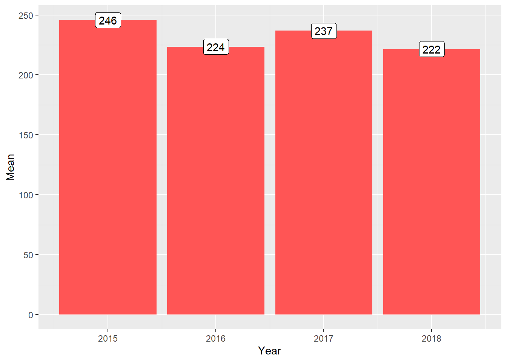
Desvio padrão por dia
sd_dia = dados %>% group_by(Day) %>% summarise(Sd = sd(Sales))Tabela
knitr::kable(sd_dia, caption="Desvio padrão das vendas por dia")| Day | Sd |
|---|---|
| 1 | 624.9360 |
| 2 | 1076.9867 |
| 3 | 390.0055 |
| 4 | 646.1560 |
| 5 | 427.4781 |
| 6 | 363.3357 |
| 7 | 428.4560 |
| 8 | 698.1524 |
| 9 | 339.1020 |
| 10 | 424.7524 |
| 11 | 369.6554 |
| 12 | 405.2767 |
| 13 | 547.0640 |
| 14 | 509.2610 |
| 15 | 401.7606 |
| 16 | 820.3548 |
| 17 | 970.0272 |
| 18 | 1297.4940 |
| 19 | 517.8450 |
| 20 | 321.6795 |
| 21 | 524.8960 |
| 22 | 802.8406 |
| 23 | 1047.5200 |
| 24 | 542.1035 |
| 25 | 627.1615 |
| 26 | 405.1301 |
| 27 | 400.9207 |
| 28 | 493.1791 |
| 29 | 361.4720 |
| 30 | 388.6582 |
| 31 | 476.0632 |
Gráfico
ggplot(sd_dia, aes(x=Day, y=Sd, label=Day)) +
geom_bar(stat = "identity", width = 0.4, fill = Purple) +
geom_label()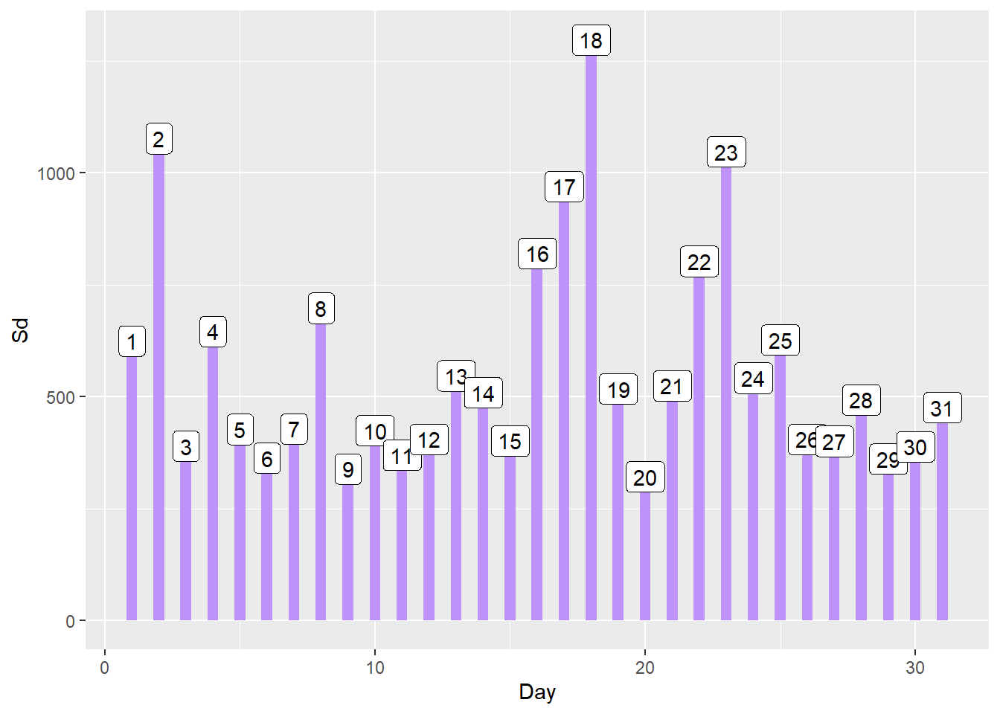
Desvio padrão por mês
sd_mes = dados %>% group_by(Month) %>% summarise(Sd = sd(Sales))Tabela
knitr::kable(sd_mes, caption="Desvio padrão das vendas por mês")| Month | Sd |
|---|---|
| jan | 607.3252 |
| fev | 577.2335 |
| mar | 1149.8230 |
| abr | 546.8830 |
| mai | 526.8144 |
| jun | 418.7019 |
| jul | 462.4673 |
| ago | 472.7973 |
| set | 553.1230 |
| out | 871.2893 |
| nov | 576.9116 |
| dez | 525.5582 |
Gráfico
ggplot(sd_mes, aes(x=Month, y=Sd, label=round(Sd))) +
geom_bar(stat = "identity", fill = Purple) +
geom_label()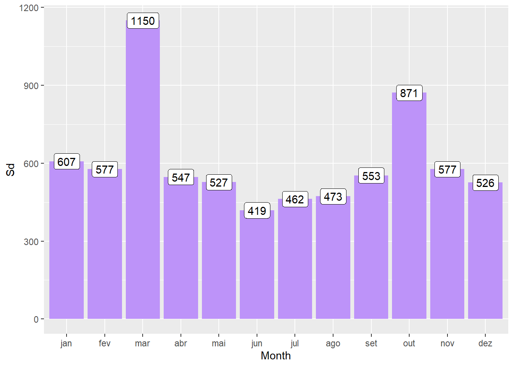
Desvio padrão por ano
sd_ano = dados %>% group_by(Year) %>% summarise(Sd = sd(Sales))Tabela
knitr::kable(sd_ano, caption="Desvio padrão das vendas por ano")| Year | Sd |
|---|---|
| 2015 | 761.1221 |
| 2016 | 466.1155 |
| 2017 | 672.6523 |
| 2018 | 587.4377 |
Gráfico
ggplot(sd_ano, aes(x=Year, y=Sd, label=round(Sd))) +
geom_bar(stat = "identity", fill = Purple) +
geom_label()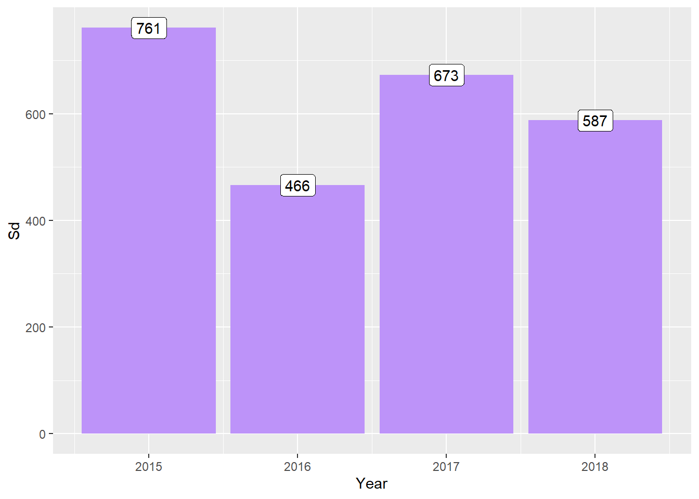
Verificando o tipo de envio mais utilizado nas vendas por mês e ano.
Por mês
Total de envios de cada tipo por mês
envio_mes = dados %>% group_by(Month, Ship.Mode) %>% summarise(Count = n(), .groups = 'drop_last')
knitr::kable(envio_mes, caption="Total de envios de cada tipo por mês")| Month | Ship.Mode | Count |
|---|---|---|
| jan | First Class | 40 |
| jan | Same Day | 4 |
| jan | Second Class | 81 |
| jan | Standard Class | 241 |
| fev | First Class | 46 |
| fev | Same Day | 14 |
| fev | Second Class | 62 |
| fev | Standard Class | 175 |
| mar | First Class | 100 |
| mar | Same Day | 54 |
| mar | Second Class | 152 |
| mar | Standard Class | 374 |
| abr | First Class | 104 |
| abr | Same Day | 18 |
| abr | Second Class | 111 |
| abr | Standard Class | 424 |
| mai | First Class | 117 |
| mai | Same Day | 47 |
| mai | Second Class | 109 |
| mai | Standard Class | 452 |
| jun | First Class | 127 |
| jun | Same Day | 29 |
| jun | Second Class | 136 |
| jun | Standard Class | 399 |
| jul | First Class | 98 |
| jul | Same Day | 45 |
| jul | Second Class | 134 |
| jul | Standard Class | 420 |
| ago | First Class | 106 |
| ago | Same Day | 34 |
| ago | Second Class | 135 |
| ago | Standard Class | 418 |
| set | First Class | 205 |
| set | Same Day | 84 |
| set | Second Class | 254 |
| set | Standard Class | 811 |
| out | First Class | 140 |
| out | Same Day | 65 |
| out | Second Class | 148 |
| out | Standard Class | 456 |
| nov | First Class | 204 |
| nov | Same Day | 72 |
| nov | Second Class | 297 |
| nov | Standard Class | 876 |
| dez | First Class | 214 |
| dez | Same Day | 72 |
| dez | Second Class | 283 |
| dez | Standard Class | 813 |
Envio mais utilizado por mês
envio_mes = dados %>% group_by(Month, Ship.Mode) %>% summarise(Count = n(), .groups = 'drop_last') %>% filter(Count == max(Count))
knitr::kable(envio_mes, caption="Envio mais utilizado por mês")| Month | Ship.Mode | Count |
|---|---|---|
| jan | Standard Class | 241 |
| fev | Standard Class | 175 |
| mar | Standard Class | 374 |
| abr | Standard Class | 424 |
| mai | Standard Class | 452 |
| jun | Standard Class | 399 |
| jul | Standard Class | 420 |
| ago | Standard Class | 418 |
| set | Standard Class | 811 |
| out | Standard Class | 456 |
| nov | Standard Class | 876 |
| dez | Standard Class | 813 |
Por ano
Total de envios de cada tipo por ano
envio_ano = dados %>% group_by(Year, Ship.Mode) %>% summarise(Count = n(),.groups = 'drop_last')
knitr::kable(envio_ano, caption="Total de envios de cada tipo por ano")| Year | Ship.Mode | Count |
|---|---|---|
| 2015 | First Class | 282 |
| 2015 | Same Day | 90 |
| 2015 | Second Class | 374 |
| 2015 | Standard Class | 1207 |
| 2016 | First Class | 272 |
| 2016 | Same Day | 108 |
| 2016 | Second Class | 406 |
| 2016 | Standard Class | 1269 |
| 2017 | First Class | 381 |
| 2017 | Same Day | 156 |
| 2017 | Second Class | 480 |
| 2017 | Standard Class | 1517 |
| 2018 | First Class | 566 |
| 2018 | Same Day | 184 |
| 2018 | Second Class | 642 |
| 2018 | Standard Class | 1866 |
Envio mais utilizado por ano
envio_ano = dados %>% group_by(Year, Ship.Mode) %>% summarise(Count = n(), .groups = 'drop_last') %>% filter(Count == max(Count))
knitr::kable(envio_ano, caption="Envio mais utilizado por ano")| Year | Ship.Mode | Count |
|---|---|---|
| 2015 | Standard Class | 1207 |
| 2016 | Standard Class | 1269 |
| 2017 | Standard Class | 1517 |
| 2018 | Standard Class | 1866 |
Verificando as dez cidades e estados que possuem o maior valor de vendas e qual foi a categoria de produto mais vendida.
Por estado
compras_estado = dados %>% group_by(State, Category) %>% summarise(Sum=sum(Sales), .groups = 'drop_last') %>% filter(Sum == max(Sum)) %>% arrange(desc(Sum)) %>% head(10)
knitr::kable(compras_estado, caption="10 estados com maiores vendas")| State | Category | Sum |
|---|---|---|
| California | Technology | 154684.18 |
| New York | Technology | 126902.69 |
| Texas | Technology | 64656.27 |
| Washington | Technology | 50536.71 |
| Florida | Technology | 46968.04 |
| Pennsylvania | Technology | 42064.07 |
| Michigan | Office Supplies | 37688.20 |
| Ohio | Technology | 34550.55 |
| Illinois | Technology | 31637.88 |
| Georgia | Office Supplies | 26397.78 |
Por cidade
compras_cidade = dados %>% group_by(City, Category) %>% summarise(Sum=sum(Sales), .groups = 'drop_last') %>% filter(Sum == max(Sum)) %>% arrange(desc(Sum)) %>% head(10)
knitr::kable(compras_cidade, caption="10 cidades com maiores vendas")| City | Category | Sum |
|---|---|---|
| New York City | Technology | 108980.14 |
| Los Angeles | Technology | 72249.71 |
| Seattle | Technology | 42506.37 |
| San Francisco | Office Supplies | 41918.45 |
| Philadelphia | Technology | 41772.12 |
| Jacksonville | Technology | 29188.35 |
| Houston | Technology | 24951.98 |
| Chicago | Technology | 21838.30 |
| San Diego | Furniture | 20031.24 |
| Newark | Technology | 18485.69 |
Verificando as hipóteses
1º Hipótese
Observando o valor médio das vendas
print(mean(dados$Sales))[1] 230.7691Sabendo-se que o valor médio das vendas é \(230.7691\), vamos verificar se a proporção das vendas que obtiveram valor maior ou igual ao valor médio é de pelo menos \(50\%\) nessa população.
\(h0: p = 0.50\) (Hipótese nula)
\(h1: p < 0.50\) (Hipótese alternativa)
Definindo os parâmetros do teste
valor_medio = mean(dados$Sales)
probabilidade_de_sucesso = 0.5
# Lista contendo 1 para valor maior ou igual ao valor médio e 0 para menor.
verifica_valor_medio = as.numeric(dados$Sales >= valor_medio)
tabela_valor_medio = table(verifica_valor_medio)
tamanho_da_amostra = dim(dados)[1]
total_sucessos = tabela_valor_medio[2]Calculando o teste de hipótese unilateral à esquerda
prop.test(
x = total_sucessos,
n = tamanho_da_amostra,
p = probabilidade_de_sucesso,
alternative = 'less',
correct = FALSE
)
1-sample proportions test without continuity correction
data: total_sucessos out of tamanho_da_amostra, null probability probabilidade_de_sucesso
X-squared = 2727.4, df = 1, p-value < 2.2e-16
alternative hypothesis: true p is less than 0.5
95 percent confidence interval:
0.0000000 0.2433543
sample estimates:
p
0.2362245 Resultados:
- Intervalo de confiança de \(95\%\).
- \(24.3\%\) das vendas nessa população possuem um valor igual ou maior ao valor médio.
- A proporção de vendas com valor maior ou igual ao valor médio é menor que \(50\%\).
- Valor \(p = 0.2362245 = 23.62\% \left ( < 50\% \right )\)
- Rejeita a hipótese nula.
2º Hipótese
Link: https://www.youtube.com/watch?v=ISenmvksxf4
Vamos verificar se o valor das vendas mensais no ano de 2017 pode ser considerada proviniente de uma distribuição Normal.
\(h0: X = N\left ( \mu, \ \sigma^{2} \right )\) (Hipótese nula)
\(h1: X \neq N\left ( \mu, \ \sigma^{2} \right )\) (Hipótese alternativa)
Calculando o valor das vendas mensais do ano de 2017
vendas_mes_2017 = dados %>% filter(Year == '2017') %>% group_by(Month) %>% summarise(Sales = sum(Sales))
knitr::kable(vendas_mes_2017, caption="Vendas mensais em 2017")| Month | Sales |
|---|---|
| jan | 18542.49 |
| fev | 22978.81 |
| mar | 51165.06 |
| abr | 38679.77 |
| mai | 56656.91 |
| jun | 39724.49 |
| jul | 38320.78 |
| ago | 30542.20 |
| set | 69193.39 |
| out | 59583.03 |
| nov | 79066.50 |
| dez | 95739.12 |
Calculando o p-value com o teste de Anderson-Darling
ad.test(vendas_mes_2017$Sales)
Anderson-Darling normality test
data: vendas_mes_2017$Sales
A = 0.2178, p-value = 0.7927Resultados
Como p-value = \(0.7927\) e \(0.7927 > 0.0500\) então há evidência estátistica para aceitar a hipótese nula (h0).
Visualizando as vendas mensais em um histograma
resposta = vendas_mes_2017$Sales
histograma=hist(resposta,
las=1,
breaks = 5,
col="lightyellow",
ylab="Frequência",
xlab="Vendas",
ylim=c(0,5),
main="Histograma")
abline(h=0)
## Criando sequência de dados quantitativos discretos entre o mínimo e o máximo da resposta
xfit<-seq(min(resposta),max(resposta))
## dnorm (Função para encontrar os possíveis valores para Y e suas densidade de probabilidade)
yfit<-dnorm(xfit,mean=mean(resposta),sd=sd(resposta))
## diff é o comando para diferença e length para comprimento
yfit <- yfit*diff(histograma$mids[1:2])*length(resposta)
## Plotando linha da curva normal
lines(xfit, yfit, col="blue", lwd=2)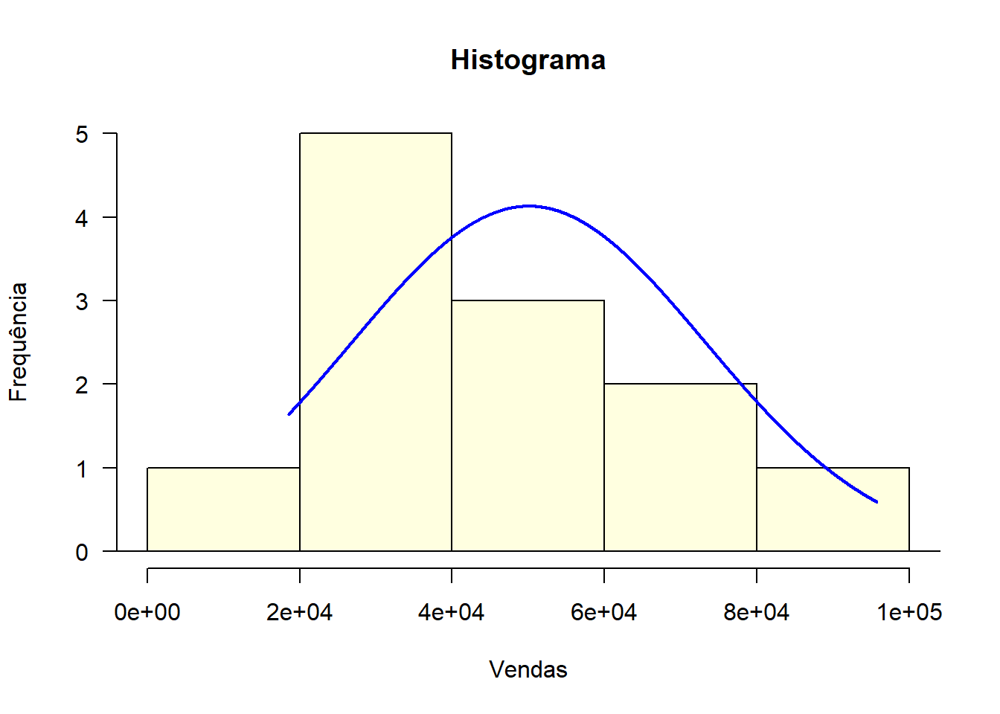